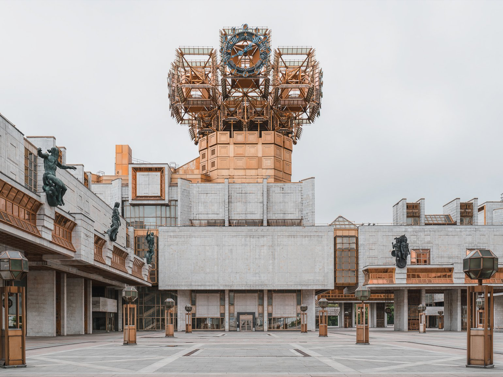

Коммерческая съемка подразумевает съёмку ради финансовой выгоды.
Fashion-съёмка
Это фотосъёмка, основная тема которой — демонстрация одежды, аксессуаров, макияжа и других элементов моды. Эти фотографии используют в каталогах, журналах, на сайтах, в социальных сетях и наружной рекламе. Цель жанра Fashion — привлечь внимание к предметам, показать их особенности, преимущества и вызвать у зрителя желание приобрести их.
Работа фотографа в этом жанре требует:
-
Выстраивать сцену так, чтобы в центре внимания были предметы, наряды и стайлинг, а не модель.
-
Составлять разные схемы освещения и в студии, и в открытой среде.
-
Управлять позингом моделей.
-
Следить за трендами визуальной культуры, разбираться в стилях дизайна и эстетике разных эпох.
-
Составлять свои мудборды и следовать референсам от заказчика.
-
Владеть навыками ретуши в Adobe Photoshop и Lightroom.
-
Взаимодействовать с другими профессионалами на одной площадке — стилистами, продюсерами, дизайнерами.
Fashion-съёмка для бренда одежды. Снимки использовали в рекламном баннере на сайте и в социальных сетях
Изображение: USHATÁVA
Интерьерная фотография
Тема этого жанра коммерческой съёмки — помещения, а задача — показать зрителю дизайн и наполнение квартир, общественных пространств, кафе, галерей. У этого направления есть особенность: в кадре не бывает людей и «лишних» предметов. Интерьерная фотография, как правило, нужна для бизнеса дизайнеров, строителей, риелторов и организаторов мероприятий, чтобы привлекать новых заказчиков или демонстрировать особенности места. Интерьерный фотограф должен уметь:
Выстраивать сцену в ограниченном, иногда совсем маленьком пространстве.
Убирать из кадра лишние вещи — слишком яркие или слишком «бытовые».
Работать с компактным световым оборудованием внутри помещений.
Разбираться в основах интерьерного стайлинга и ретушировать снимки.
Предметная фотография
В жанре предметной фотографии делают снимки отдельных объектов; как маленьких, например ювелирных изделий, так и крупных — мебели или экспонатов в музеях. Обычно предметные фото делают для рекламы, и их задача — презентовать преимущества и качества вещей, чтобы привлечь внимание покупателя и мотивировать к покупке.
Что важно уметь фотографу «предметки»:
Выбирать удачный ракурс для объекта сложной формы или фактуры, мелкого или крупного размера.
Использовать специальные фоны, подставки и короба для фотографирования и учитывать, что они влияют на восприятие композиции. Например, на тёмном фоне часто снимают дорогие «маскулинные» вещи.
Работать с объективами для макросъёмки.
Создавать композиции и сюжеты, используя пропсы — реквизиты для фото. Например, цветы, ткани, жидкости.
Работать на потоке и снимать множество образцов за короткое время.
Изображение: Джонатан Ноулз
Свадебная фотография
Это жанр съёмки, в котором заказчиками выступают пары, а не компании или бренды. Эти фотографии как таковые не «продают» и не рекламируют, но свадебные фотографы работают только на коммерческих условиях. В жанре есть два направления: классический и репортажный. В классическом фотограф делает постановочные снимки свадебного дня, фиксирует романтические моменты с позированием. В репортажном — наблюдает через объектив за праздником, но не вмешивается, фотографирует проявления живых эмоций и случайные моменты. У жанра свадебной съёмки есть специфика. Во-первых, сезонность: с мая по сентябрь мероприятий значительно больше, чем в другие месяцы. Во-вторых, необходимое количество техники: фотограф берёт на съёмку по несколько комплектов батарей, карт памяти и много разных объективов и буквально носит их на себе, чтобы всё оказалось под рукой в нужный момент.
Свадебному фотографу нужны особенные навыки:
Управлять позами участников.
Выстраивать романтический нарратив с помощью окружающего пейзажа или интерьеров.
Работать с первого дубля и фиксировать уникальные моменты.
Изображение: Игорь Булдак
Условно-коммерческая съёмка подразумевает съёмку не всегда имеющую финаносовую выгоду.
Портрет
Портретные фотографии показывают внешность, передают характер и настроение героев, их занятия или статусы, а объектом съёмки могут быть не только люди, но и животные. В этом жанре есть два крупных направления — групповой и индивидуальный. По формату съёмки они могут быть студийные и репортажные: первые создают в специально оформленном пространстве, вторые — «в жизни». Портреты делают и для бизнес-целей, и для личных: для портфолио, резюме и презентаций, для сайта или блога, для плаката или афиши. В рекламе тоже используют этот жанр: например, когда для рекламного баннера нужна фотография селебрити-амбассадора.
Фотопортретист должен уметь:
-
Взаимодействовать с героем, создавать обстановку доверия и расслабленности, чтобы в снимках не считывалось неестественное напряжение.
-
Выбирать такие ракурсы, которые помогают выразить идею портрета.
-
Работать с двумя-тремя источниками освещения, софтбоксами и цветным светом.
-
Учитывать в композиции фон, образ и одежду героя, положение его тела.
Сейчас вы можете наблюдать портреты, созданные автором данного сайта:


Архитектурная фотография
Фотосъёмку домов, дворцов, храмов, вокзалов, стадионов и руин можно проводить и на коммерческой основе, и ради искусства. Этот жанр нужен, чтобы фиксировать масштаб эстетики и детали зданий и сооружений, и он тесно связан с предметным и пейзажным.
В работе архитектурного фотографа есть особенности:
Необходимо иметь тренированный глазомер, чтобы чётко видеть геометрию и линии.
Стоит быть готовым к экспериментам с точками съёмки — например, забираться на большую высоту.
Источник освещения в большинстве случаев только естественный, максимум — уличные фонари, поэтому для фотографирования часто приходится дожидаться определённого времени суток, погоды и сезона.
Один из успешных представителей — нидерландец Иван Баан. Он делает кадры по всему миру и считается самым высокооплачиваемым в мире фотохудожником архитектурного жанра.
Источник:https://www.behance.net/gallery/97742889/Golden-Brains
Репортаж
Фотографии в этом жанре демонстрируют события любого масштаба — и мировой значимости, и локальные. Их задача — передать динамику сцен и состояние участников так, чтобы у зрителей появилось ощущение присутствия.
Работа в жанре репортажа требует:
Фокусироваться на фактах, не вмешиваться в ход событий и не манипулировать участниками.
Снимать сериями, которые визуально фиксируют начало, развитие, кульминацию и завершение истории.
Использовать оборудование, которое позволяет фотографировать дальние объекты, — например, зум-объективы, широкоугольные и телеобъективы.
Некоммерческая съёмка подразумевает под собой съемку неимеющую финансовой выгоды, в данном виде съемки важен сам творческий процесс. Данный вид съёмки очень подходит для начинающих.
Пейзаж
Пейзажное фото изображает естественную природу и созданный человеком ландшафт. Задача жанра — не просто показать картинку, а вызвать эмоции у зрителя. Пейзаж отличается от натюрморта или снимков с людьми тем, что в нём нельзя скорректировать композицию. Фотохудожник не может физически убрать гору или дерево — только найти ракурс, в котором их не видно. Особенности фотосъёмки в пейзажном жанре такие:
-
Надо понимать, как работать с ближним, дальним и средним планами, чтобы объекты выглядели эффектно.
-
Работать придётся в любую погоду и только при доступном естественном освещении.
Сейчас вы можете наблюдать пейзажи, созданные автором данного сайта на просторах Вятского края:


Street и туристическая фотография
В жанре фотографий, которые передают наблюдения и впечатления путешественника, есть несколько ответвлений: street или уличная, travel или туристическая, а также outdoor или adventure. Это в первую очередь изображения пейзажей, архитектуры, культуры и людей, характеризующих определённый регион. Такие снимки образовывают, показывают красоту и разнообразие мира, привлекают к местности других путешественников.
Фотографу, который предпочитает этот жанр, необходимо:
Создавать кадры повседневной жизни и явлений, которые ярко характеризуют место путешествия.
Иметь достаточно хорошую физическую форму и быть выносливым.
По возможности использовать компактную технику и универсальные устройства: полнокадровую камеру, объективы — «широкоугольник», «штатник» и телевик.
Уметь договариваться с героями случайной съёмки, при этом избегать специального выстраивания кадра и не просить их позировать. Самое важное — уважать чужую культуру и личное пространство персонажей.